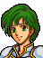
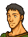
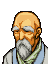

Opening Reunion with August
リーフ王子、こちらです
アウグスト司祭！？
どうしてこんなところに？
王子を救出しようと
策をねっていたのですが
その必要もなくなったようですな
・・・ずいぶんつらい思いを
なされたようだが
ご無事でなによりです
アウグスト
ぼくは今ほど
帝国が憎いと思ったことはない
両親を奪い、そして今また
母ともいえる大切な人を
奪っていった・・・
ぼくは、帝国が・・・
その手先として悪逆をつくす
レイドリックが憎い！！
教えてくれ、アウグスト
やつらと戦うにはどうすればいい？
彼女を取り戻せるなら
ぼくはどんなことでもする
教えてくれ、アウグスト！
エーヴェルどのは
石化魔法で石にされてしまった
ということですが
もしそれが事実なら
あきらめていただかねば
なりませぬな
！
・・・どういうことだ！
元に戻す方法がないとでもいうのか！！
いいえ
キアという聖杖があれば
石化はとけます
ですが、その杖は
ロプトの大司教マンフロイによって
封印され
彼の一族にしか使えぬと
言われております
マンフロイの一族・・・
そんな・・・
これはうわさですが
イード砂漠の地下深くに
ロプトの秘密神殿があり
そこには多くの戦士たちの石像が
かざられているそうです
その中には
十数年前バーハラの戦いで捕えられた
若き戦士たちの姿もあるとか・・・
エーヴェルどのの石像も
いずれその神殿に収められるのでしょう
そんな・・・
そんなばかなことがあるか！
お怒りはごもっともですが
現在、この世界のいたるところで
王子の言う『ばかなこと』が起きています
このトラキア半島でも
すでに数千・・・
いや数万にものぼる
子供たちが捕えられ
帝都バーハラに送られています
特にロプトの勢力が強いこのマンスターや
王子の故国レンスターでは
根こそぎと言っていいほど・・・
もはや街中で
子供たちの姿を見かけることは
ありません
親たちは子どもを奪われて平気なのか！
どうして自分たちで戦わないんだ！？
むろん市民たちは戦っています
このマンスターでもそうですが
いたるところで抵抗はおきているのです
ですが、しょせんは
武器も持たぬ市民たち、帝国軍と
ロプト教団を相手にかなうはずもなく
その場で殺されたり
捕えられて処刑されたり
それは哀れなものです
特にロプトの魔道軍団
『ベルクローゼン』のやり方は
残虐そのもので
一人でも反抗すればその村の住民全員を
火あぶりや生き理めにしてしまうという
まさに伝説の『暗黒の時代』そのもの・・・
人々はもはや抵抗する気力も失い
奴隷のようなありさまです
そこまでひどいのか・・・
そうです
かつては空あおく、みどり豊かな
北トラキアでしたが
いまや
晴れることのない暗雲に
おおわれている・・・
王子
エーヴェルどののことが
気がかりなのはわかりますが
あなたには
もっと大事な使命があるはずだ
今、この北トラキアで
もっとも必要とされているのは
北トラキアの人々の力を引き出し
戦うための集団として
まとめあげることができる英雄
・・・武勇や知略に優れているか
どうかは問題ではない
げんそうとしての『英雄』です
王子は、悲劇の英雄
キュアンとエスリンの子として
生まれながらにそのしかくをもっている
おわかりですか？
あなたが立ちあがれば、北トラキアの
反帝国勢力は一つにまとまり
その結果
帝国やロプトの勢力を追い出すことが
できるかもしれぬのです
エーヴェルのことを
あきらめたわけではないが
アウグストの言うことはわかる
ぼくに
北トラキア解放の旗印になれというなら
望むところだ
レンスター王国を再興し
その一軍を率いて帝国軍を打ち破る・・・
それは
フィンと二人で
ずっと語りつづけてきた夢だ！
アウグストが軍師として
補佐してくれるなら
ぼくはどんな苦労もいとわない！
だが
ほんとうにできるのだろうか？
わかりました
そのお覚悟さえ聞ければよいのです
今はとにかく
逃げることだけをお考えください
ぼくたちを追って
多数の兵が出撃してきている
安全なルートがあるのか？
東の通用門から
逃げるのがよろしいかと・・・
ですが、問題は城下に入ったときです
もし見はりの兵に見つかれば
敵の大部隊を呼び寄せることになり
脱出は困難になるでしょう
見はりの兵に見つからぬように？
そんなことができるのだろうか・・・
Only if Karin is alive

街に入らなければいいのでしょ
だったら私にまかせてください
一人ずつなら
私のエルメスに乗せて
運んであげます
空からなら城壁をこえていけるし
敵に見つかる心配もないわ
そうか
それなら戦わなくても脱出できる
でも、カリンたちは大丈夫なのか？
エルメスは私のために
がんばるって言ってくれてるわ
ホントはね
ペガサスは女の子にしか心を許さないの
男の人にはふれられるのもイヤみたい
でも、エルメスは
ガマンしてくれるって・・・
男の子だからガマン強いのよね
・・・脱出については
それでよろしいでしょう
あとは
城下を訪れるかどうか・・・
それが問題ですな
When a unit waits on the town's south gate

よう、大丈夫かい？
話は聞いてるぜ
早くここから逃げな
If you skipped Chapter 4x and it is within 5 turns
もう少ししたら、セティ様たちが
助けに来てくださるはずだ
そうすりゃ、もう少しは楽になるんだが
Enemy turn 3
司祭、すまぬな
余計な荷物を押しつけたようだ
ガルザス、とかいいましたね
あなたはレイドリック卿に
雇われているのでしょう？
どうしてこの娘を・・・
何か関係のある方なのですか？
いや・・・
そういうわけではないが・・・
・・・わかりました
一人旅には少し大きな荷物ですが
しばらくは私が預かることにしましょう
ではガルザスどの、ご武運を！
(Mareeta and Saias warp away)
気づかなかった・・・
まさかおまえだとは・・・
NPC turn 5
Only if you skipped Chapter 4x
よかった
リーフ王子はまだ無事のようだ
ええ
なんとか間にあったようです
ではこれより
われらがおとりとなって
王子の脱出をたすける
みんなにはすまないが
彼を死なせるわけにはいかない
協力してくれ
はい、セティ様！
NPC turn 9
Only if you skipped Chapter 4x
そろそろ限界か・・・
これより退却に移る
敵の本隊がくる前に
全員離脱するんだ、急げ！
Enemy turn 15 Galzus's pursuit
おおっ、剣士ガルザスよ
おそかったではないか！
俺になにか用か？
見ればわかるだろう
囚人が逃げ出した
かなり手強いのだ、力を貸してくれ！
ふっ、たわいもない・・・
House upper left
If Boy escaped in Chapter 4x
弟のボーイは
マギ団のひとたちに
安全な村まで送ってもらいました
本当にありがとうございました
このご恩は一生忘れません
お礼といってはなんですが
わが家に伝わる
この秘伝の書を差し上げます
これは不思議な力が備わる書物と
いわれてるんですが
お役に立ちますでしょうか・・・
If Boy did not escape in Chapter 4x
ボーイのことはもうあきらめました
いえ、いいんです
あなたたちをうらんだりしていません・・・
House lower left
If Leena escaped in Chapter 4x
よおっ、待っていたぜ
妹のリーナを
助け出してくれてサンキュー！
うん、わかってるって
ほらっ
これをやるぜ！
なんだかよくわかんねぇが
裏庭にある木の根元から出てきたんだ
なんかの書物の
１ページだと思うんだけど
いわくありげだろ？
持ってたら
いいことあるんじゃねえかな
わっかんねえけどさ！
If you did not rescue Leena in Chapter 4x
けっ、何が解放軍だ
妹のリーナはとらわれたままなんだぜ！
あんたら
カッコつけるんじゃねぇよ
何もできねぇくせに！
House centre bottom
If Emily escaped in Chapter 4x
娘を
エミリを助けてくださったのは
あなたたちですね
ああっ
何とお礼を申せばよいのでしょう
これは我が家の家宝
騎士の勲章です
きっとお役に立つでしょう
If Emily did not escape in Chapter 4x
ああっ、エミリ・・・
あなたはどこへ行ってしまったの・・・
House centre top
If Murphy escaped in Chapter 4x
おおっ、あんたら
待っていたんだ
俺の息子
マフィーを助け出してくれたんだってな
おかげで
安全な場所に隠すことができた
もちろん他の子どもたちも一緒だ
俺は
マンスターの斧騎士
ヒックスってんだ
レイドリックのヤロウには
ほとほと愛想がつきた
俺もあんたらと共に戦うぜ
よろしくな！
If Murphy did not escape in Chapter 4x
帰れ！
貴様らに用はない！
何が解放軍だ
何がレンスターの王子だ
子ども一人助けられなくて
大きな口をたたくんじゃないぜ
House lower right
If Bella escaped in Chapter 4x
妹のベラを助けてくださったそうですね
ありがとうございます
あたしたち
貧しいから
たいしたお礼もできませんが
よろしければ
このせいすいをお持ちください
If Bella did not escape in Chapter 4x
ベラは・・・帰ってこないわ・・・
もういい・・・
あなたたちには期待しないから・・・
House upper right
If Cliff escaped in Chapter 4x

孫のクリフを助け出してくれたのは
あんたたちじゃな
うむ
さすがは勇者セティのお仲間じゃ
ありがたいのぉ
おおっ、そうじゃ、忘れておった
このレイピアを
あんたたちにやろう
いや、えんりょはいらぬ
ほんの気持ちゆえに
If Cliff did not escape in Chapter 4x
まぁ、しかたないじゃろう・・・
クリフは帰ってこぬが
聖戦士でもないおぬしらに、多くは望めん
やはり太陽は東方よりいずるか・・・
After Leif escapes
レイドリック様
リーフ王子は
城外へ脱出したもようです
ばかもの
なにをしておるのだ！
あんなザコ一匹捕えられぬのか！
はっ
申し訳ありません！
すぐに
アイゼナウ将軍に
騎士団を率いて追撃させよ！
トラキア領内に
逃げこまれでもしたら
面倒なことになる
はっ
承知いたしました
ところで
あのマリータとかいう娘はどうした？
見当たらぬが・・・
・・・後で報告するつもりでしたが・・・
見はりの兵が何者かにおそわれ
娘は奪われてしまいました・・・
申し訳ありません！
むうっ
どいつもこいつも
役に立たぬやつばかりだ！
いったい、何者の仕業なのか
見当もつかぬのか！！
かなりの手練であることは
まちがいありません
あのガルザスとかいう用心棒を
現場近くで見たものがおるのですが
やつは信用できるのでしょうか？
ふうむ・・・ガルザスか・・・
あの男の背中にオードの聖痕を
見たというものがおります
それが事実なら
やつはイザークの王族ということに
なりますが・・・
ふっ、ワシは
素性も調べずに用心棒をやとうほど
おろかではないぞ
やつは
確かにイザークの王族よ
滅亡したリボー王家の王子で
イザークのシャナン王子とは
親同士が姉弟だから従兄弟になるな
シャナン王子といえば
反帝国勢力のリーダーの一人でしょう
そのようなものの身内を
城内に置くのは
危険ではありませんか？
ふっ
貴様はなにも知らんのか？
ガルザスの一族、つまりリボーの王族は
かつての内乱で、シャナンの祖父ひきいる
イザーク軍によって滅ぼされたのだ
やつはそのために
幼いころから
様々な苦労をしてきたらしい
そんな男が
一族のかたきであるシャナン王子に
協力するはずはなかろう
なるほど
そういうことですか・・・
あの娘を逃がした理由は
ワシにもさっしがつく
聖痕は
あの娘の背中にもあったからな・・・
クックックッ・・・
はっ？
い、いや、なんでもない
まあいい
ガルザスのことはかまうな
あの娘のことはもうよい
ガルザスほどの用心棒を
失うわけにはいかぬからな・・・
Galzus: battle quote
哀れだな
自分の運命を呪え・・・
Galzus: defeat quote
ふっ
最後に・・・面白い奴と・・・
出会えた・・・な・・・
Galzus: release quote
(No dialogue)